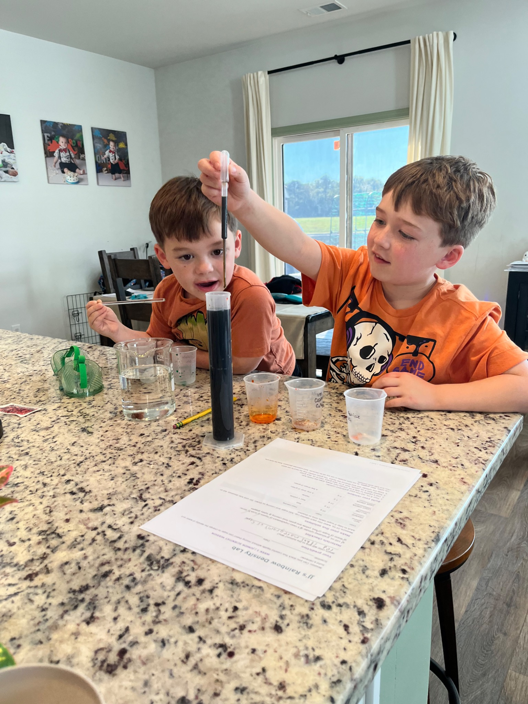
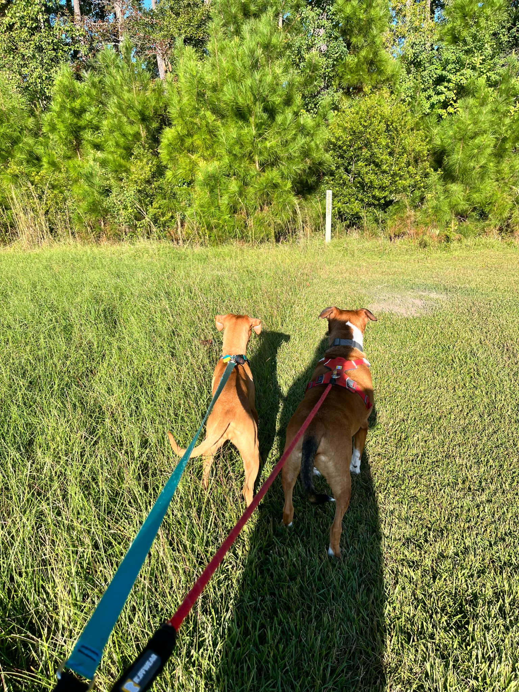
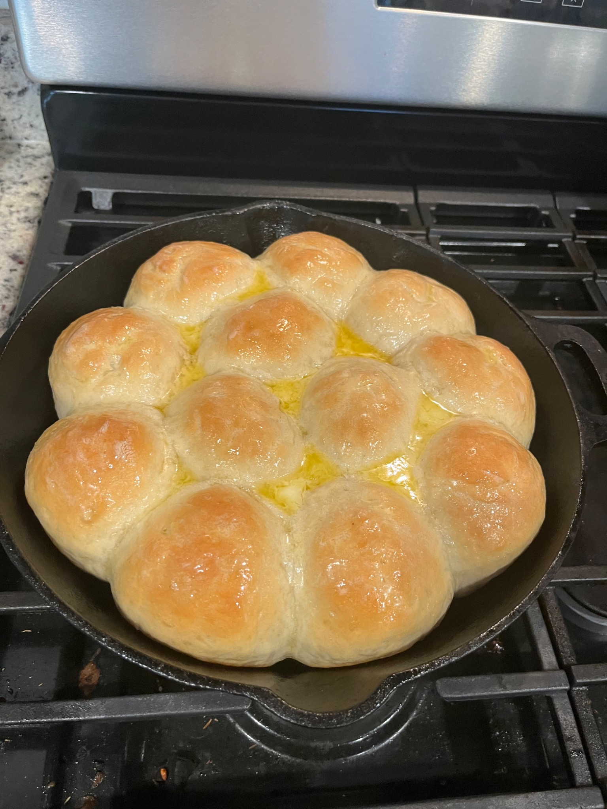
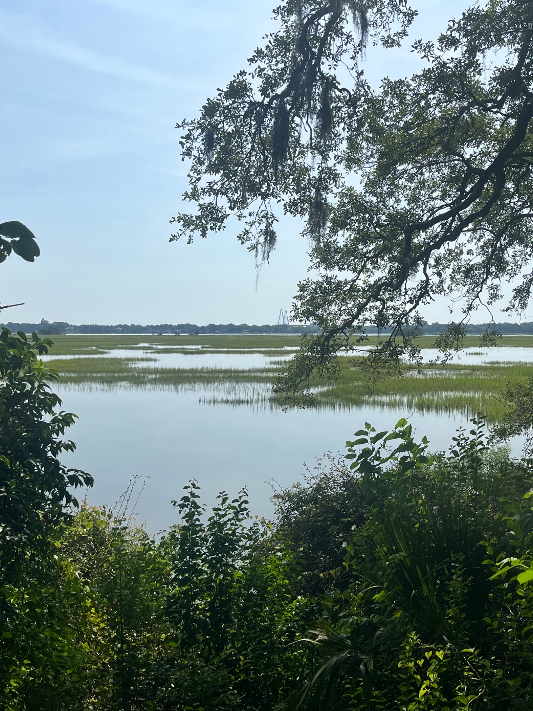
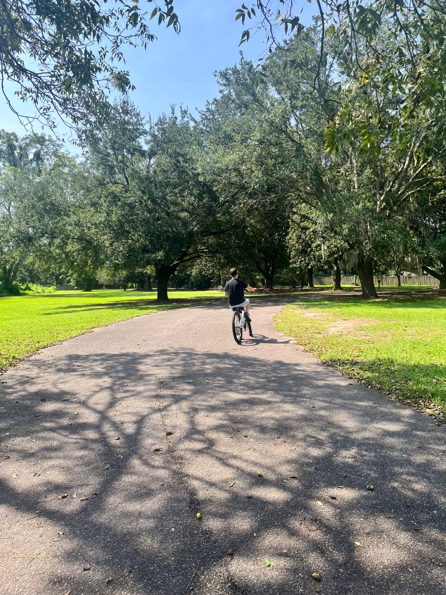

The Lowcountry
Home Edit

Hey there, friend! ☕
Can you believe November is already here? Between work, school, the boys, and our four-legged family members, life has been anything but boring around here!
Grab your coffee and catch up with me on a few of our latest adventures. 🤎
Life lately 🧪

Our kitchen recently turned into a mini science lab! The boys got to do a hands-on experiment using some of my old college lab equipment. I studied biochemistry in college, so sharing a little piece of that world with them was especially fun. Judging by their faces, I think it was a hit!
Winston & Rory 🐾

Winston and Rory have been enjoying lots of outdoor walks lately. Of course, walking two dogs means lots of sniffing stops and very little say in the route. I'm pretty sure they're taking me for a walk! 😂
From my kitchen 🍞

Thanksgiving is almost here, which means it's nearly time for the homemade rolls my boys wait all year for! I only make these buttery skillet rolls for Thanksgiving, and they're one of their absolute favorites. Keeping them as a once-a-year treat makes them even more special. 🤎
Around the Lowcountry 🌿


One of my favorite places to explore is Charles Towne Landing in West Ashley. Between the oak trees, peaceful paths, waterfront views, and history, it's somewhere I never get tired of visiting. I love places where you can spend time together and enjoy the fresh air without needing a packed itinerary.
Home sweet home 🏡
A friendly November reminder: check your HVAC filter and make sure your heating system is ready for cooler weather. Here in the Lowcountry, we might need a sweater in the morning and the AC by lunchtime! 😂 A little maintenance now can help keep your home comfortable later.
A little real estate talk 🔑
If buying or selling a home is on your mind before the end of the year, I'm always happy to talk through your options. No pressure, just a helpful conversation.
And if you need a place to start, my free buyer and seller guides are always available.